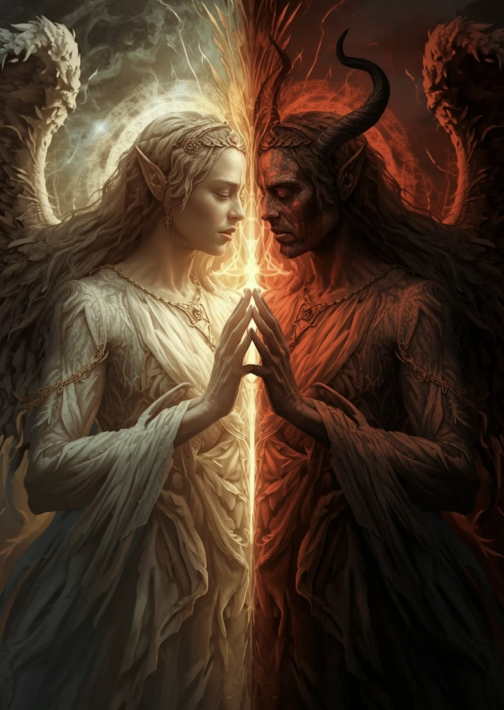

BoBo 原創療癒故事
《鏡中之戰》
天使與魔鬼，一線之差
不是誰永遠站在光裡，也不是誰注定留在黑暗。真正定義我們的，是面對恐懼與傷痛時，一次又一次所選擇的方向。

天使與魔鬼，一線之差
不是誰永遠站在光裡，也不是誰注定留在黑暗。真正定義我們的，是面對恐懼與傷痛時，一次又一次所選擇的方向。
世界上有一道裂縫。
不在山川之間，不在海洋之底——
它在每個人的胸口，
就在心臟跳動的那一刻，
那道裂縫若隱若現。
有人叫它「良知」，
有人叫它「慾望」，
但真正見過它的人，
只是沉默地笑。
她生來就被稱為奇蹟。
璃安，一個在戰火廢墟中出生的孩子。母親在臨死前用盡最後一口氣，把她包在白色的布裡，放在燃燒的城市邊緣。沒有人知道那塊布為什麼沒有燒盡。
她被教士撿到，在修道院長大。
修道院的人都說：「這個孩子，眼睛裡有光。」
璃安從不哭泣，從不憤怒。她替病人清洗傷口，替老人唸書，替街頭的乞丐帶來熱湯。每一個靠近她的人，都感覺心裡有什麼東西——那些積壓多年的傷——悄悄地鬆動了。
人們開始叫她「小天使」。
她笑著接受這個名字。
但她從來不告訴任何人：每一個夜晚，當修道院的燭火熄滅，她躺在硬木床上，感覺自己的胸口有一隻黑色的手，在輕輕地抓。
她不知道那隻手是什麼。
她只是每天早晨，
微笑著起床，
把那隻手壓下去。
沒有人願意講他的名字。
人們叫他「灰衣人」，叫他「那個怪人」，叫他「不吉利的傢伙」——但沒有人問過他叫什麼。
他的臉上有一道疤，從左眼角延伸到嘴角。
沒有人知道那道疤的來歷。
只知道：
凡是他待過的地方，植物會枯萎。
凡是他看過的人，心裡會莫名感到一陣寒意。
小鎮的人傳說：「他是魔鬼的使者。」
他聽見了，只是低下頭，繼續走。
他的真實名字，叫薩爾。
薩爾有一本破舊的日記，裡面寫滿了密密麻麻的字——不是詛咒，不是惡意——而是他每天記錄見到的美好事物：
每一個夜晚，他也躺在硬木板上。
他的胸口，有一雙白色的翅膀，在輕輕地振動。
他不知道那雙翅膀是什麼。
他只是每天早晨，
沉默地起床，
把那雙翅膀折疊起來，
穿好灰色的衣服，
走出門。
那一年，小鎮發生了一場大火。
不是意外，是人為。
一個富商，為了吞併土地，指使手下在夜裡點燃了貧民窟的木屋。大火在半夜蔓延，哭聲和呼救聲把整個天空都染成了血紅色。
璃安第一個衝進火場。
她把孩子一個一個抱出來，把老人一個一個攙出來。她的白色長袍燒焦了，她的頭髮燒焦了，她的手掌燒出了水泡——但她沒有停下腳步。
就在最後一棟木屋快要倒塌的時候，她聽見裡面還有聲音。
她深吸一口氣，準備衝進去。
一隻手，抓住了她的手腕。
她轉頭——是那個灰衣人，薩爾。
「讓我去。」他說，聲音沙啞，但平靜。
「你——」她想說，你不用——
但他已經衝進去了。
濃煙中，他的身影幾乎看不見。
火焰熄滅了之後，人們看見他從廢墟裡爬出來，懷裡抱著一個嬰兒。
嬰兒哇哇大哭，活著。
薩爾的背後，已經燒傷了大半。
人群圍上去，又退開——因為他們看見了那道疤，還有他焦黑的皮膚。
只有璃安走上前，
蹲下來，
輕輕地替他清理傷口。
她的眼睛，第一次，
流下了眼淚。
大火之後，真相被揭露——是那個富商放的火。
鎮民憤怒了。
他們要求懲罰，他們聚集在富商的宅邸前，他們高喊著正義。
但富商有錢有勢，官府的人站在他那邊。
三個月後，富商不但沒有受到懲罰，反而把燒毀的土地都吞併了。
那些失去家園的人，只能住在廟宇的廊下，在風雨中。
璃安，那個人們心目中的小天使，第一次感覺到——那隻黑色的手，無法再被壓下去了。
她開始規劃。
她用十年積累的信任，一點一點地靠近富商身邊的人。她微笑，她關懷，她讓他們對她毫無防備——然後，她把那些人的秘密，一條一條地記錄下來。
她沒有哭泣，沒有憤怒。
她只是冷靜地，精準地，毀掉每一個傷害過那些人的人。
她讓富商的生意夥伴知道他的惡行，讓他的家族蒙羞，讓他的財富一點一點地流失。
沒有人看見她做了什麼。
他們只看見富商的隕落。
但在某一個夜晚，
她對著鏡子，
看見自己的眼睛裡，
那道光，
暗了一點。
她問自己：我還是天使嗎？
鏡子沒有回答。
薩爾，那個人們眼中的魔鬼，在大火後留了下來。
沒有人叫他留下，沒有人感謝他。
但他每天，在廟宇廊下，替那些失去家園的人生火，煮粥，修補破舊的毯子。
孩子們起初不敢靠近他。
有一天，一個小女孩的布娃娃掉到泥水裡，她哭了，但沒有大人理她——大人們有自己的悲傷。
薩爾把布娃娃撿起來，仔細地洗乾淨，用他破舊的外衣的一角，把它擦得盡量乾淨，然後遞給那個小女孩。
小女孩看著他的疤，沉默了很久。
然後問：「你的臉，會痛嗎？」
薩爾愣了一下。
從來沒有人問過這個問題。
人們只是害怕，或者嘲笑。
「……以前會，」他說，「現在不會了。」
小女孩點點頭，很認真地說：「那就好。」
然後接過娃娃，跑開了。
那天夜晚，
薩爾打開他的日記，
寫下：
胸口那雙折疊的白色翅膀，
悄悄地，展開了一點點。
深秋，璃安找到了薩爾。
她坐在他對面，兩個人都沉默了很久。
「你知道嗎，」她說，「我做了一些事。不太好的事。」
「我知道，」他說。
她抬起頭，看著他。
「你不覺得我變了嗎？」
薩爾想了很久，說：
璃安沉默。
「那你呢，」她說，「你一直做好事，但所有人都叫你魔鬼。你不憤怒嗎？」
薩爾低頭看著自己的手。
兩個人之間的沉默，
這一次，不沉重，
反而像是某種東西，
終於被說出來了。
璃安問他：「你覺得，天使和魔鬼的差別是什麼？」
薩爾沉思良久，說：
「也許沒有差別。」
「什麼意思？」
璃安看著他。
「那如果，有一天，我飛錯了方向呢？」
夜風吹過，廟前的燈籠輕輕搖晃。
璃安閉上眼睛。
那隻胸口黑色的手，
她這一次，沒有壓下去，
也沒有放任它——
她只是，握住了它。
她感覺到：
那隻手，
顫抖了一下，
然後，
鬆開了。
後來，人們繼續傳說。
有人說，小鎮來了一個天使和一個魔鬼，他們在一場大火後相遇，然後，雙雙消失了，沒有人知道他們去了哪裡。
有人說，在某個遙遠的地方，有一個醫者，臉上有一道疤，眼神溫柔，他走過哪裡，哪裡就有人得救。
有人說，在同一個地方，有一個女人，袍子上有燒焦的痕跡，從不言語，但她站在哪裡，哪裡的人就能夠找到勇氣，說出埋藏心底最深的那句話。
沒有人知道他們是同一對人。
也沒有人知道——
在某個安靜的夜晚，他們坐在一起，對著同一面鏡子，看見的不是天使，也不是魔鬼——而是兩個，帶著傷，還在選擇的，人。
——《鏡中之戰》終——
《鏡中之戰》不是要把人分成善與惡，也不是要替傷害找理由。它想說的是：每個人心中都有溫柔、憤怒、恐懼、渴望與保護自己的本能。真正重要的，不是消滅其中一面，而是看見它、理解它，再決定自己要如何行動。
讓文字與音樂一起，陪你走進這場光與影的相遇。
若影片無法在頁面播放，可點擊下方按鈕前往 YouTube 觀看。
本故事由 BoBo 提供核心構想、主題與創作方向，並使用 AI 協作整理，再由 BoBo 選擇、編修與發布。故事、頁面編排及 BoBo 所加入的人為創作內容，請勿未經允許複製、轉載、改編或作商業使用。
本頁嵌入的 YouTube 影片保留於原平台播放。歌曲、影像及相關素材的權利狀態，以影片上傳者所持有的授權、所使用 AI／音樂平台的條款，以及其中是否含第三方素材為準。
這是一項創作與權利標示，不構成法律意見；若未來要販售、授權或正式登記作品，請保留提示詞、初稿、修訂紀錄、音樂生成紀錄與平台授權條款。